Chapter 2
Setting Up Your Development Environment
Maya had arrived early to prepare for her second session with Ethan. She'd reserved one of MagicTech's small meeting rooms and was setting up her laptop when Ethan walked in.
"Good morning, Ethan," Maya greeted. "Today's all about getting your tools in place. Think of it as gathering the materials before we start building."
"Makes sense," Ethan replied, opening his laptop. "I've been excited to get my hands on some actual code."
"Perfect. We'll be working in two environments today," Maya explained, drawing a simple diagram on the whiteboard. "First, the AWS Management Console—a web interface where we'll set up your account and permissions. Second, your local development environment where we'll install the tools needed to write and deploy infrastructure code."
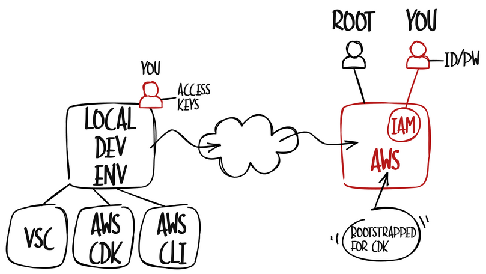Development environment
AWS Environment Setup
Maya pointed to the first box on her diagram. "Let's start with the AWS side of things."
AWS Account Creation
"I see you've already created an AWS account—excellent," Maya said. "For anyone following along, you'd start by going to aws.amazon.com and clicking 'Create an AWS Account'."
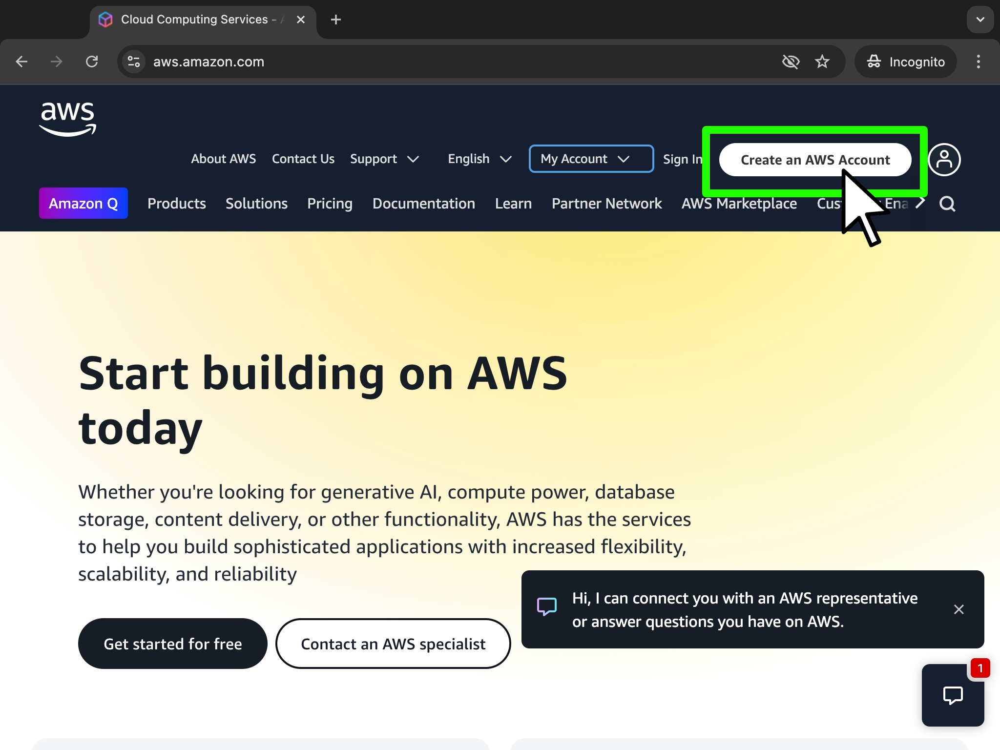Screenshot of AWS account creation page
Understanding the Root User
"When you first created your AWS account, you set up what's called a root user,” Maya explained. "The root user is the account owner with complete, unrestricted access to all AWS services and resources."
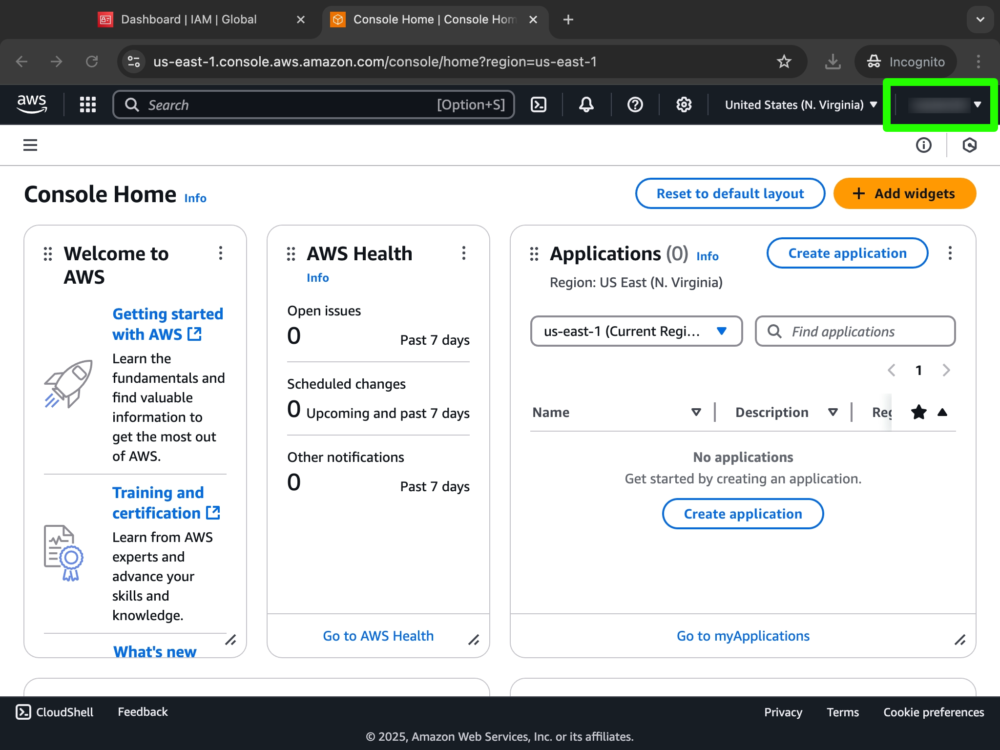Screenshot of AWS Console loging page showing root user singn-in
"Think of the root user like having the master key to an entire building," she continued. "It's extremely powerful, but that also makes it dangerous if it falls into the wrong hands. AWS best practices strongly recommend not using the root user for everyday tasks."
Ethan looked concerned. "So I shouldn't use the email and password I created the account with?"
"Exactly," Maya nodded. "The root user should only be used for a handful of specific tasks that only the root user can perform, like changing account settings or closing your AWS account. For everything else—including all our MagicMail development work—we'll create and use IAM users with appropriate permissions."
"That's why our next steps are so important: first, we'll secure the root user with multi-factor authentication, and then we'll create a separate IAM user for your development work."
Setting Up Multi-Factor Authentication (MFA) for the Root User
"Now, let's enhance the security of your root account by enabling MFA," Maya continued. "This adds an extra layer of security, requiring a code from an authenticator app or hardware device in addition to your password."
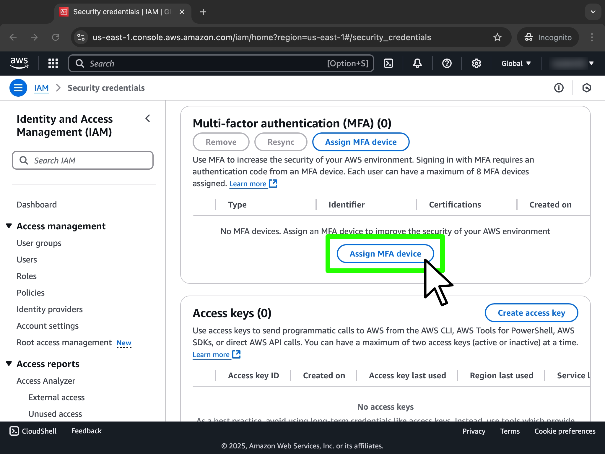Screenshot showing where to find MFA settings in Security Credentials
"In the AWS Console, logged in as the root user, click on your account name in the top right, then select Security Credentials. Under the Multi-factor authentication (MFA) section, click Assign MFA device.”
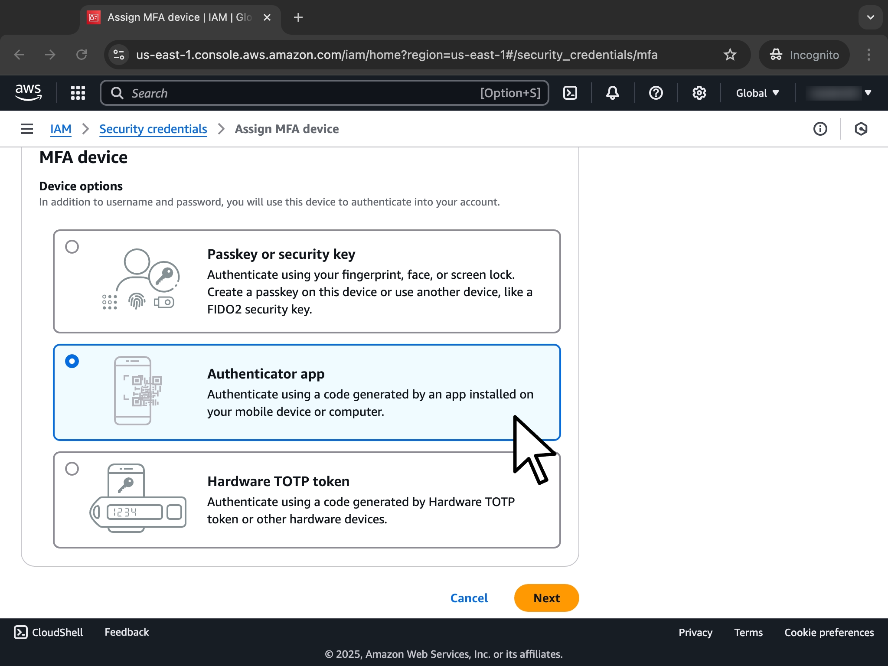Screenshot of the MFA setup wizard steps
"You can use a virtual MFA device like Google Authenticator or Authy on your smartphone, or a hardware key. Follow the prompts to set it up. Once configured, you'll need both your password and a temporary code from your MFA device to sign in as the root user. Protect your root user credentials and MFA device carefully."
Creating an IAM User for Development
"Next, still in the AWS Console (you can log out as root and log back in using the IAM user creation process, or use the root user just for this initial setup), we'll create an IAM user for your development work," Maya explained. "This user will have specific permissions, following the principle of least privilege eventually, though we'll start with broader permissions for learning."
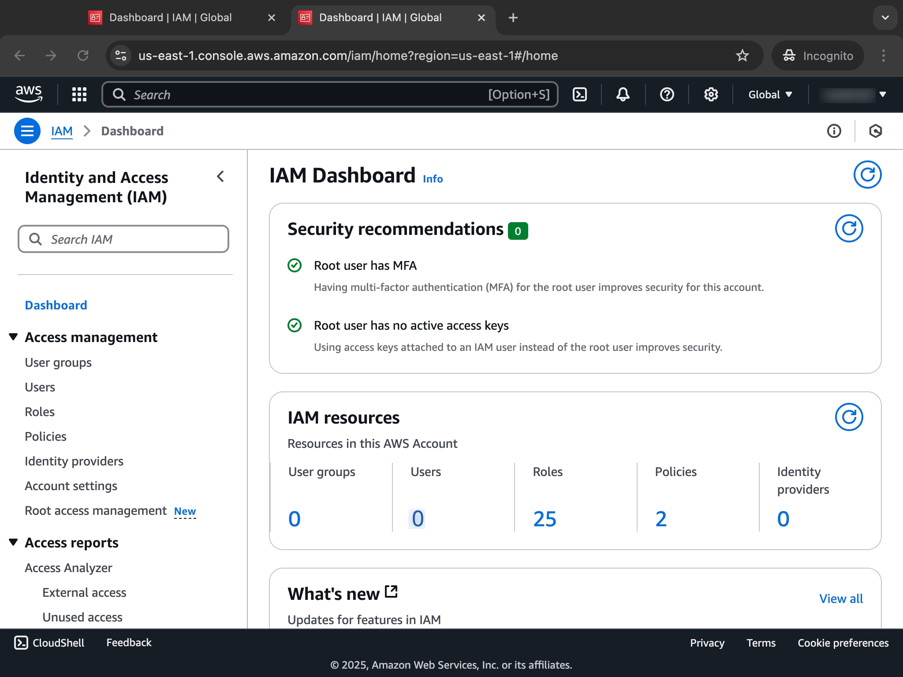Screenshot of the IAM dashboard
"Navigate to the IAM service from the AWS Console. Click Users in the left navigation and then Add users.”
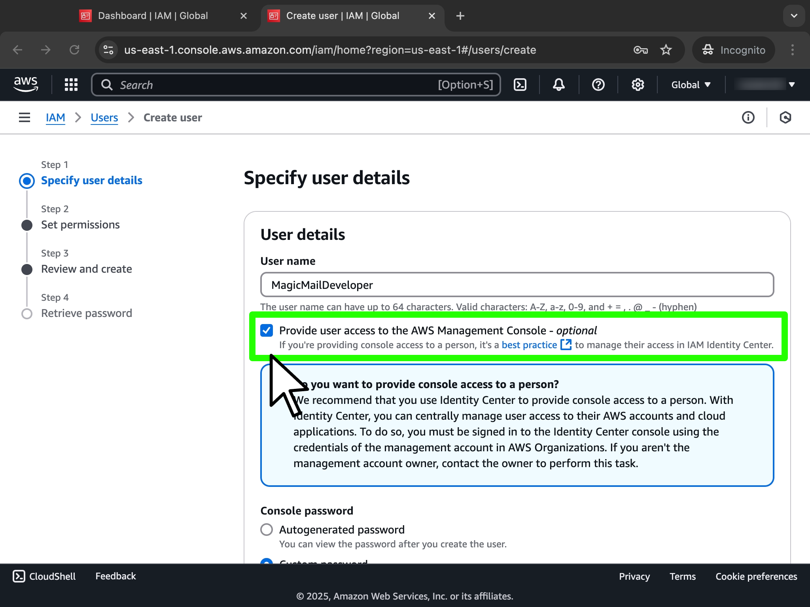Screenshot of the initial IAM user creation page
"Let's name your user MagicMailDeveloper. For access type, select Provide user access to the AWS Management Console - *optional*. We'll set up a console password for now." Choose 'I want to create an IAM user' and set an initial password (you can require a password reset on first login).
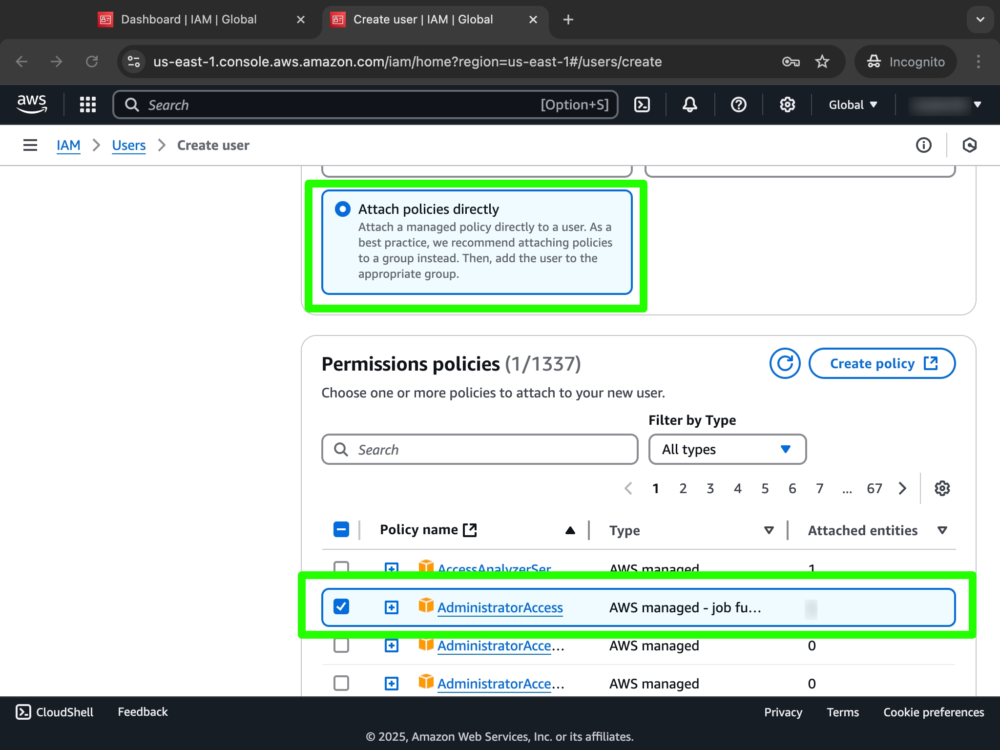Screenshot showing permissions options - Attach policies directly
"For permissions, select Attach policies directly. Search for and attach the AdministratorAccess policy. Warning: This policy grants full administrative access. For learning purposes, this simplifies setup, but in a real-world production environment, you must follow the principle of least privilege and grant only the specific permissions required for the tasks."
"Review the settings and click Create user. You'll see a success page."
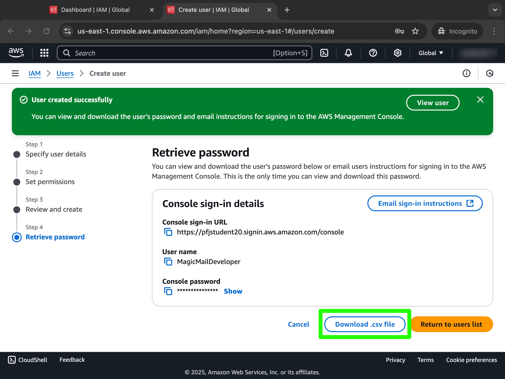Screenshot of the IAM user creation success page showing console sign-in URL and username
"Make a note of the console sign-in URL, your username (MagicMailDeveloper), and the password you set. Log out of the root user account now, and log back in using this new IAM user and the specific sign-in URL. From now on, use this IAM user for all your work unless specifically instructed otherwise."
Creating Access Key Credentials for Programmatic Access
"Now that we're logged in as MagicMailDeveloper, we need to generate access keys for programmatic access," Maya explained. "These credentials (an Access Key ID and a Secret Access Key) are used by tools like the AWS CLI and CDK to interact with AWS services on your behalf, without needing you to log into the console."
"In the IAM console, click on your username (MagicMailDeveloper) in the user list.”
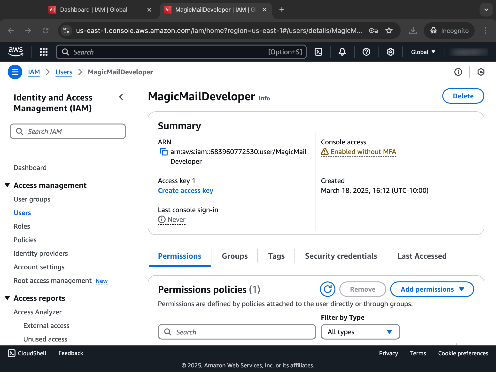Screenshot of the IAM user's summary page
"Navigate to the Security credentials tab. Scroll down to the Access keys section and click Create access key.”
 Screenshot showing access key use case selection, highlighting CLI]
Screenshot showing access key use case selection, highlighting CLI]
"AWS will ask about your use case. Select Command Line Interface (CLI) since we'll be using these credentials with the AWS CLI and CDK." Acknowledge the recommendation about alternatives if prompted, and proceed.
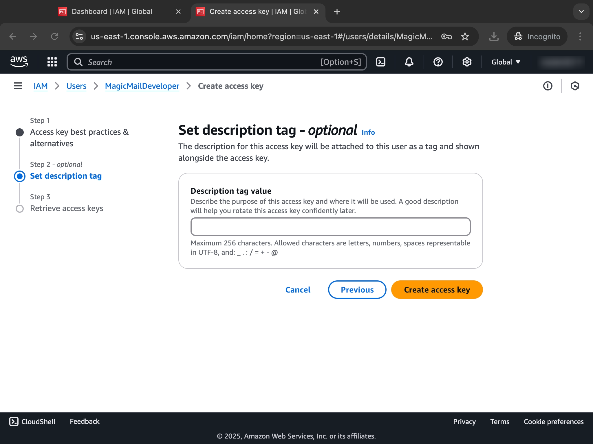Screenshot of access key description tag option/confirmation
"You can add an optional description tag, like 'CDK Development Key', then click Create access key. You'll see your newly created credentials."
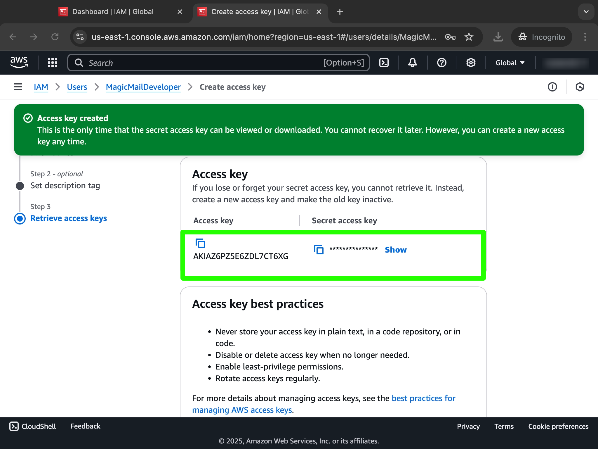Screenshot showing the Access Key ID and Secret Access Key - emphasize this is the only time the secret is shown
"This is the only time the Secret Access Key will be shown. You must download the .csv file containing both keys and store it securely. Treat these keys like your root password."
Local Development Environment Setup
Maya moved to the second box on her whiteboard. "Now let's set up your local machine with all the tools needed to develop and deploy AWS infrastructure."
Installing Visual Studio Code
"Our first tool is VS Code, a powerful code editor," Maya said. "If you don't already have it installed, download it from code.visualstudio.com."
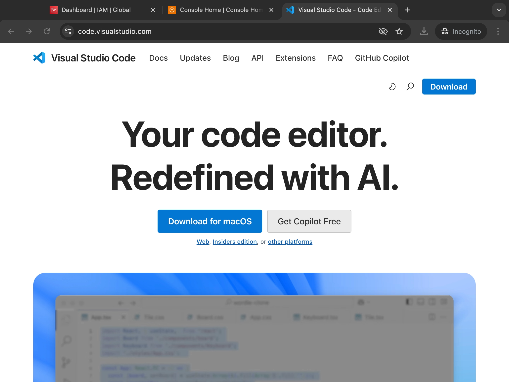Screenshot of VS Code download page
"After installation, open VS Code and we'll set up some useful extensions."
 Screenshot of VS Code Extensions view
Screenshot of VS Code Extensions view
"In VS Code, click on the Extensions icon in the sidebar (it looks like four small squares). Search for and install these extensions:
AWS Toolkit(Provides integration with AWS services)
JavaScript and TypeScript Nightly(Enhanced language support, optional but helpful)
ESLint(Helps enforce code style and find errors)
Prettier - Code formatter(Automatically formats your code for consistency)“
Installing Node.js and npm
"Next, we need Node.js and npm (Node Package Manager). CDK is built on Node.js, and we'll use npm to manage project dependencies, including the CDK library itself," Maya explained.
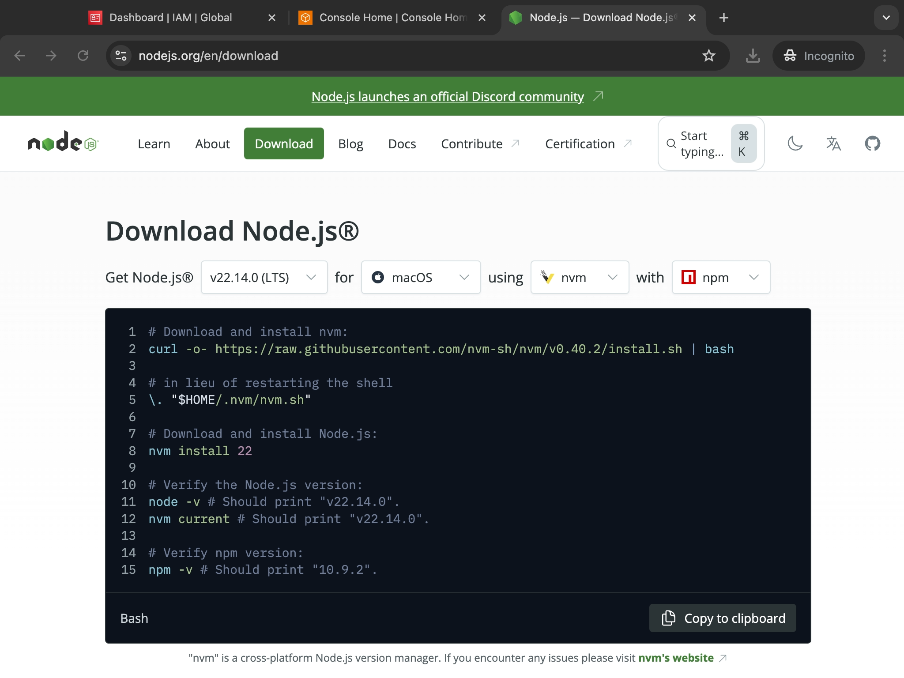Screenshot of Node.js download page, highlighting LTS version
"Download and install the LTS (Long Term Support) version of Node.js from nodejs.org. The npm package manager comes included."
"After installation, let's verify everything is working correctly. Open a terminal in VS Code by selecting 'Terminal' 'New Terminal' from the top menu."
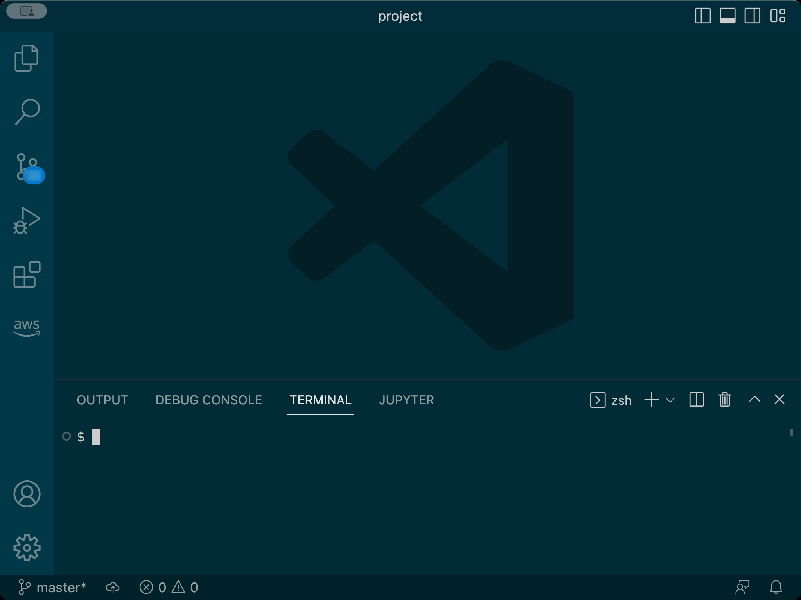
Screenshot of an empty VS Code terminal
"Then run these commands to check the versions:"
xxxxxxxxxxnode --versionnpm --version
 Screenshot of terminal showing successful version output for node and npm
Screenshot of terminal showing successful version output for node and npm
"You should see version numbers printed for both commands."
Installing and Configuring the AWS CLI
"Now we need to install the AWS Command Line Interface (CLI), which lets us interact with AWS services directly from the terminal," Maya continued. "The CDK Toolkit uses the CLI behind the scenes for authentication and deployment."
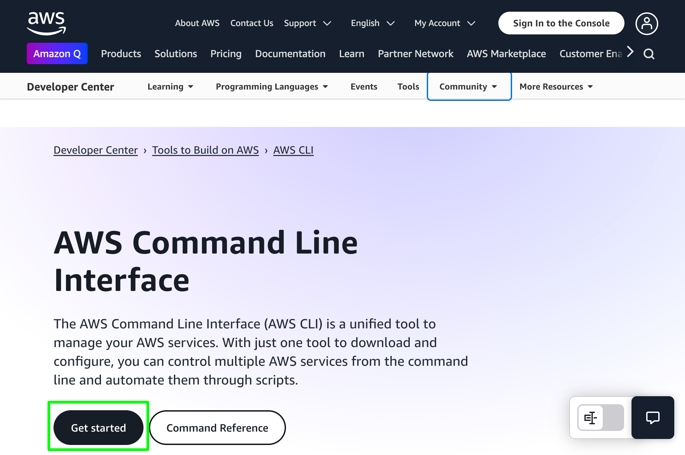Screenshot of AWS CLI installation instructions page
"Follow the installation instructions for your operating system available at aws.amazon.com/cli. Click on Getting started, then click on Install/Update from the left menu bar“
"After installation, verify it by running:"
xxxxxxxxxxaws --version  Screenshot of terminal showing successful AWS CLI version output
Screenshot of terminal showing successful AWS CLI version output
“Now, we need to configure the CLI to use the access keys we created earlier for our MagicMailDeveloper IAM user. In your VS Code terminal, run:"
xxxxxxxxxxaws configure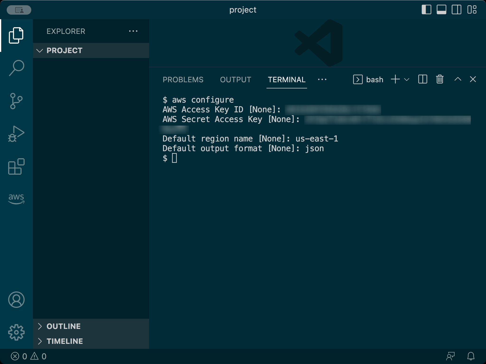Screenshot of terminal showing the aws configure prompts
"You'll be prompted for:
AWS Access Key ID: (Copy from the
.csvfile you downloaded)AWS Secret Access Key: (Copy from the
.csvfile)Default region name: Enter the region you want to work in primarily (e.g.,
us-east-1,eu-west-2). Choose a region close to you or your users. You can find a list of regions in the AWS documentation.Default output format: Enter
json.
This command securely stores your credentials in a configuration file on your local machine (typically ~/.aws/credentials and ~/.aws/config). The CDK and AWS CLI will automatically use these credentials."
"Let's verify the configuration by asking AWS who we are:"
xxxxxxxxxxaws sts get-caller-identity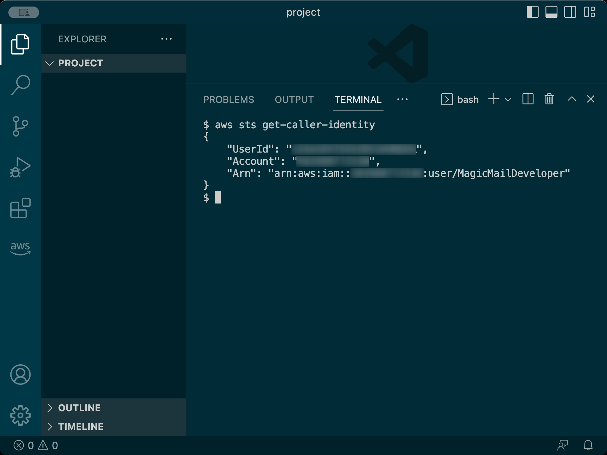Screenshot of terminal showing output of aws sts get-caller-identity, including Account, UserId, and Arn for the IAM user
"This command contacts AWS using your configured credentials and asks for information about the current identity. You should see the AWS Account ID and the ARN (Amazon Resource Name) of your MagicMailDeveloper IAM user. This confirms that the CLI is configured correctly and can authenticate with AWS."
Installing the AWS CDK Toolkit
"Finally, let's install the AWS CDK Toolkit. This is the command-line utility (cdk) we'll use to interact with our CDK applications—to synthesize CloudFormation templates, deploy stacks, and manage our infrastructure," Maya said.
"We install it using npm. In your VS Code terminal, run:"
xxxxxxxxxxnpm install -g aws-cdk"The -g flag installs the CDK Toolkit globally on your system, making the cdk command available from any directory."
"Let's verify the installation:"
xxxxxxxxxxcdk --version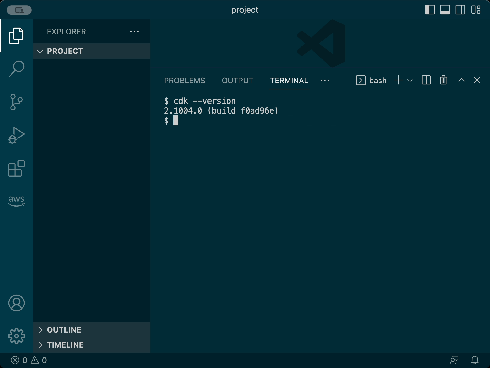screenshot of terminal showing successful CDK version output
"You should see the version number of the CDK Toolkit."
Bootstrapping Your AWS Environment
"There's one final setup step before we can deploy our first CDK app: bootstrapping," Maya explained. "Bootstrapping provisions the resources that the CDK needs in your AWS account and region to be able to deploy stacks. This includes an S3 bucket to store deployment assets (like CloudFormation templates) and IAM roles to grant CDK the necessary permissions."
"You only need to bootstrap an environment (a specific AWS account and region combination) once. In your VS Code terminal, run:"
xxxxxxxxxxcdk bootstrap aws://ACCOUNT-NUMBER/REGION"Replace ACCOUNT-NUMBER with your 12-digit AWS account number (you can find this in the output of aws sts get-caller-identity or in the AWS console) and REGION with the default region you configured with the AWS CLI (e.g., us-east-1)."
"If you don’t know your account number, you can get it using the AWS CLI:"
xxxxxxxxxxaws sts get-caller-identity --query Account --output text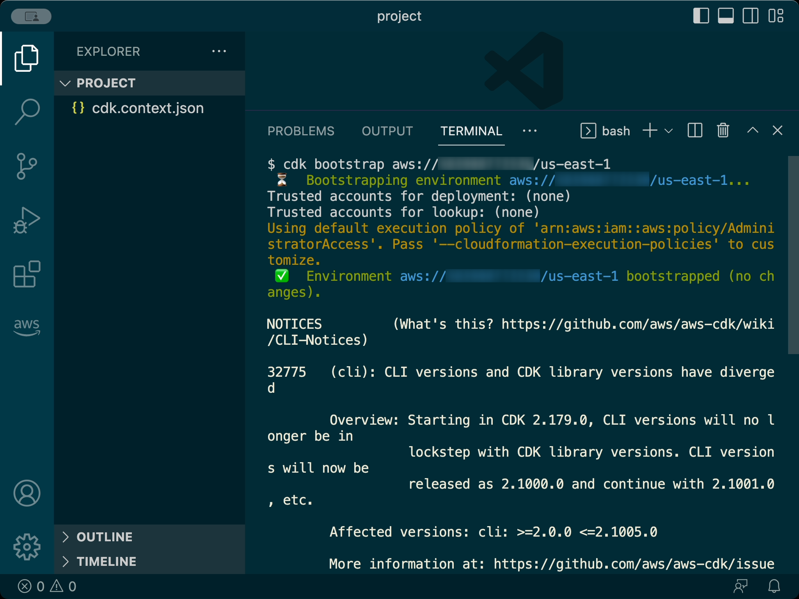Screenshot of terminal showing the output of a successful cdk bootstrap command
"This command creates a CloudFormation stack named CDKToolkit in your specified AWS account and region. This stack contains the necessary resources like the S3 bucket and IAM roles."
"You can verify this by going back to the AWS Management Console, navigating to the CloudFormation service, and ensuring you're in the correct region. You should see the CDKToolkit stack listed with a status of CREATE_COMPLETE."
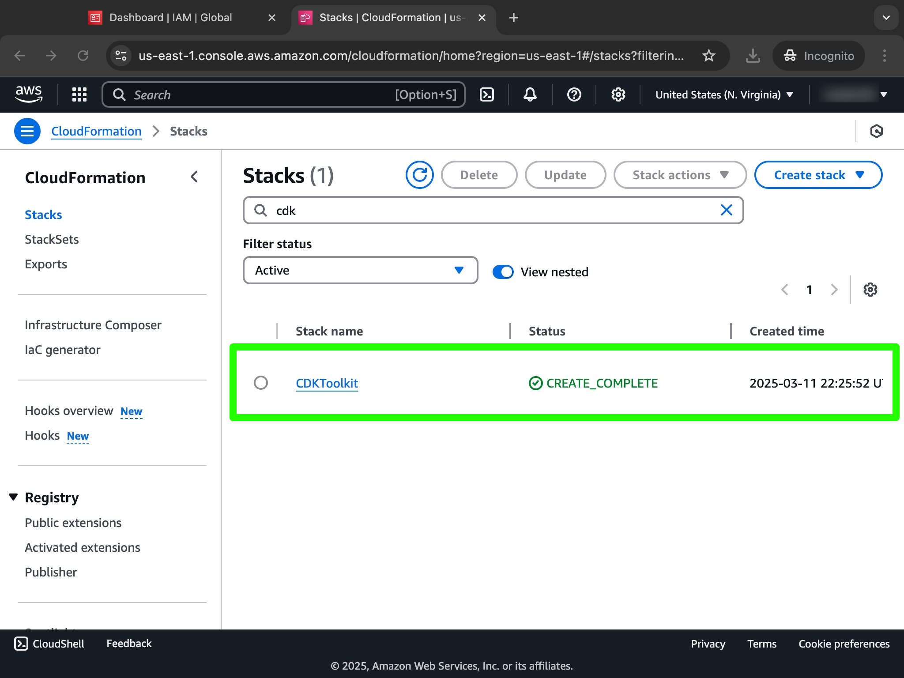Screenshot of the CloudFormation console showing the CDKToolkit stack
A Note on Version Control
"One last thing to mention is version control," Maya said, closing her laptop. "We'll need a way to track changes to our infrastructure code, just like we do with application code. The standard tool for this is Git."
Ethan nodded. "Should we set up a Git repository now?"
"Actually, let's hold off on initializing Git for this specific project just yet," Maya replied. "Our team at MagicTech uses GitLab for all our projects, and we'll be setting up a proper project structure with version control integrated into our CI/CD pipeline in a later session. I don't want you to set up one system now only to switch later. For now, just be aware that version control is essential, and we'll integrate it properly soon."
"Makes sense," Ethan agreed. "So we've got the AWS account secured, an IAM user with access keys, VS Code with extensions, Node.js, AWS CLI configured, and the CDK toolkit installed and bootstrapped. Anything else we need right now?"
"That covers all the essential tools to start our journey," Maya smiled. "Next time, we'll dive into AWS fundamentals before we begin coding. You'll be creating cloud infrastructure before you know it!"
Wrapping Up
Maya looked at Ethan's laptop screen with satisfaction. "Congratulations! You now have a complete development environment ready for AWS CDK. Let's recap what we've set up:"
"On the AWS side:
AWS account created.
Root user secured with MFA.
IAM user (
MagicMailDeveloper) created for development work, with console access and programmatic access keys (stored securely!).Bootstrapped environment (Account/Region) ready for CDK deployments (
CDKToolkitstack).
On your local machine:
VS Code installed with relevant extensions.
Node.js and npm installed.
AWS CLI installed and configured with your IAM user credentials.
AWS CDK Toolkit installed (
cdkcommand)."
Ethan nodded, looking pleased. "It feels good to have everything in place. What's next?"
"Next time, we'll dive into AWS fundamentals—understanding regions, availability zones, and the core services we'll use for MagicMail," Maya replied. "After that, we'll start writing actual CDK code."
"For homework, I recommend exploring the AWS Console (using your MagicMailDeveloper IAM user login) to get familiar with the interface. Try locating the services we mentioned in our first meeting: S3, Lambda, DynamoDB, and API Gateway. Also, find the CloudFormation service and look at the CDKToolkit stack that was created."
"Also, keep your development environment handy—we'll use it extensively in future sessions."
Ethan packed up his laptop. "Thanks, Maya. I'll explore the console and make sure everything stays working."
"Perfect. See you next week for our AWS fundamentals session!"
Ethan's Homework
Ensure all required development tools are installed: AWS CLI, Node.js (LTS), and VS Code with recommended extensions.
Verify your AWS CLI configuration is working by running
aws sts get-caller-identityand confirming it shows yourMagicMailDeveloperuser details.Confirm you have successfully run
cdk bootstrapfor your chosen AWS account and region by checking for theCDKToolkitstack in the CloudFormation console for that region.(Optional) Explore the AWS console using your
MagicMailDeveloperIAM user login. Locate S3, Lambda, DynamoDB, API Gateway, and CloudFormation services.
Key Takeaways
A complete AWS CDK development environment consists of both AWS account setup/security and local development tools.
Security First: Always secure your root user with MFA and use IAM users with appropriate permissions for daily tasks. Protect access keys diligently.
Local development tools include a code editor (VS Code), Node.js/npm, the AWS CLI (configured with IAM user credentials), and the AWS CDK Toolkit (
cdkcommand).Bootstrapping (
cdk bootstrap) prepares your AWS account/region to work with CDK deployments by creating necessary resources (like theCDKToolkitstack).Version control (like Git) is essential for managing infrastructure code, though we deferred specific setup for this project.
Looking Ahead
In the next chapter, Maya will guide Ethan through AWS fundamentals, explaining regions, availability zones, and the core services that will form the foundation of MagicMail.
AWS Services Introduced
AWS IAM (Identity and Access Management): Service for securely controlling access to AWS resources. Used to create users (like
MagicMailDeveloper), manage permissions, and generate access keys.AWS CLI (Command Line Interface): A tool to manage AWS services from your terminal. Used for configuration (
aws configure) and interacting with AWS programmatically. The CDK uses it under the hood.